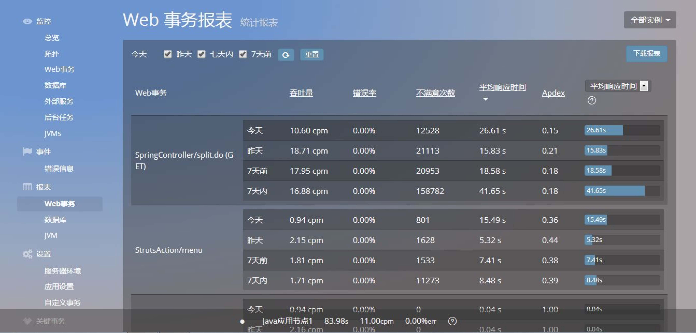

报表-web事务
- 在 Web 事务报表页面，主要有选择栏、下载按钮和实例选择器、表主体 （表主体中包含排序列）这 3 个部分。
选择栏：
- 在选择栏，默认展示 24 小时与 48 小时~24 小时、上周同 一天（24 小时）、7 天内平均值。用户也可按时间段自行筛选、重置。
- 更改默认显示，选中或取消某时间段的复选框，然后点击刷新，则可以更改报表展示内容。恢复默认报表，点击“重置”。
下载按钮和实例选择器：
实例选择器，可选择按不同的 agent 进行数据筛 选，并生成报表。
点击“下载报表”，当前页面展示的报表，则会 以 excel 表格的形式导出，方便用户在本地备份数据，并进行长期数据对比分析。 
表主体：
该表展示了响应时间占比最高的 7 个 Web 事务，其相应的 5 个重要指标，包括吞吐量、 错误率、不满意次数、平均响应时间、Apdex 值。
通过该表最右边的排序列，用户可以对该报表进行排序。
通过将 24 小时内、48 小时~24 小时、上周同一天（24 小时）、7 天内平均值的 Web事务数据进行对比，用户可以分析出来哪些 web 事务耗费的时间最长、请求数最大、偏离 正常值最多等信息，更便于定位问题。